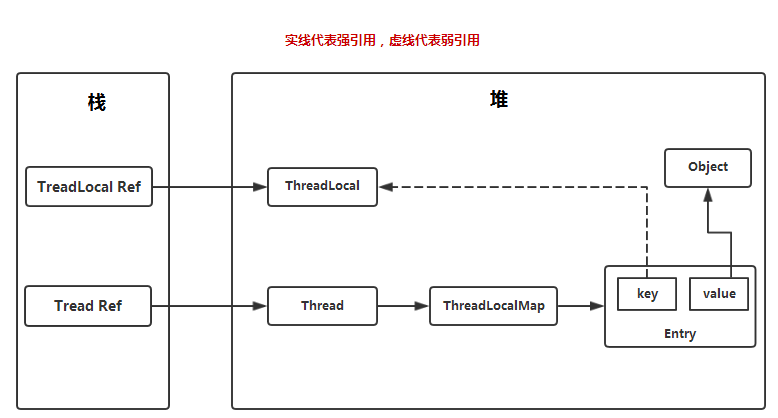
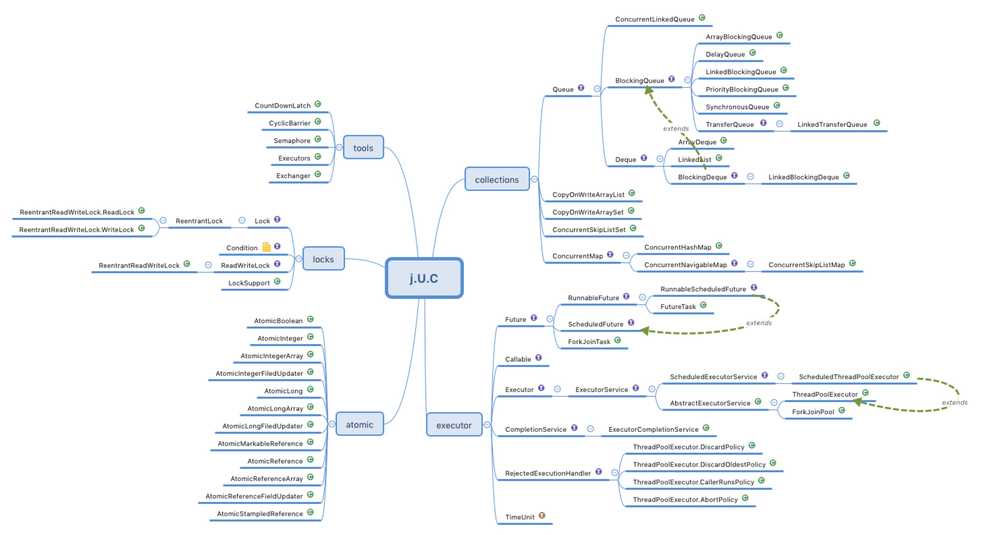

JAVA并发编程与高并发解决方案 - 并发编程 三
版本
作者
内容
2018.4.8
chuIllusions
线程安全策略
线程安全策略 创建后状态不能被修改的对象叫作不可变对象。不可变对象天生就是线程安全的。它们的常量（变量）是在构造函数中创建的，既然它们的状态无法被修改，那么这些常量永远不会被改变——不可变对象永远是线程安全的。
不可变对象需要满足的条件
对象创建以后其状态就不能修改
对象所有域都是final类型
对象是正确创建的（在对象创建期间，this引用没有逸出）
不可变对象 final final关键字：类、方法、变量
修饰类：不能被继承，final类中的成员属性可以根据需要设置为final，但final类中所有的成员方法都被隐式指定为final方法。一般不建议将类设置为final类型。可以参考String类。
修饰方法：1）锁定方法不被继承类修改；2）效率
修饰变量：1）基本数据类型变量，初始化后便不能进行修改；2）引用类型变量，初始化之后不能再指向别的引用
1 2 3 4 5 6 7 8 9 10 11 12 13 14 15 16 17 18 19 20 21 22 23 24 25 26 27 28 @Slf 4j@NotThreadSafe public class ImmutableExample1 private final static Integer a = 1 ; private final static String b = "2" ; private final static Map<Integer, Integer> map = Maps.newHashMap(); static { map.put(1 , 2 ); map.put(3 , 4 ); map.put(5 , 6 ); } public static void main (String[] args) map.put(1 , 3 ); log.info("{}" , map.get(1 )); } private void test (final int a) } }
Collections java提供Collections工具类，在类中提供了多种不允许修改的方法
Collections.unmodifiableXXX：Collection、List、Set、Map…
1 2 3 4 5 6 7 8 9 10 11 12 13 14 15 16 17 18 19 20 21 @Slf 4j@ThreadSafe public class ImmutableExample2 private static Map<Integer, Integer> map = Maps.newHashMap(); static { map.put(1 , 2 ); map.put(3 , 4 ); map.put(5 , 6 ); map = Collections.unmodifiableMap(map); } public static void main (String[] args) map.put(1 , 3 ); log.info("{}" , map.get(1 )); } }
1 2 3 4 5 6 7 8 9 10 11 12 13 14 15 16 public class Collections public static <K,V> Map<K,V> unmodifiableMap (Map<? extends K, ? extends V> m) { return new UnmodifiableMap<>(m); } private static class UnmodifiableMap <K ,V > implements Map <K ,V >, Serializable @Override public boolean remove (Object key, Object value) throw new UnsupportedOperationException(); } @Override public boolean replace (K key, V oldValue, V newValue) throw new UnsupportedOperationException(); } } }
Guava 谷歌的Guava提供类似Java中的Collections
ImmutableXXX：Collection、List、Set、Map…
pom.xml
1 2 3 4 5 <dependency > <groupId > com.google.guava</groupId > <artifactId > guava</artifactId > <version > 23.0</version > </dependency >
1 2 3 4 5 6 7 8 9 10 11 12 13 14 15 16 17 18 @ThreadSafe public class ImmutableExample3 private final static ImmutableList<Integer> list = ImmutableList.of(1 , 2 , 3 ); private final static List<Integer> lists = ImmutableList.of(1 , 2 , 3 ); private final static ImmutableSet set = ImmutableSet.copyOf(list); private final static ImmutableMap<Integer, Integer> map = ImmutableMap.of(1 , 2 , 3 , 4 ); private final static ImmutableMap<Integer, Integer> map2 = ImmutableMap.<Integer, Integer>builder() .put(1 , 2 ).put(3 , 4 ).put(5 , 6 ).build(); public static void main (String[] args) System.out.println(map2.get(3 )); } }
介绍了不可变对象，通过在某些情况下，将不能被修改的类对象，设置为不可变对象，来让对象在多个线程间是线程安全的。归根到底，其实是躲避开了并发的问题。除了不可变对象，还存在一个方法 就是线程封闭
线程封闭 把对象封装到一个线程里，只有这一个线程能看到该对象，那么就算这个对象不是线程安全的，也不会出现任何线程安全的问题，因为它只能在一个线程中被访问，如何实现线程封闭：
Ad-hoc 线程封闭：程序控制实现，非常脆弱、最糟糕，忽略
堆栈封闭：简单的说就是局部变量，无并发问题。多个线程访问同一个方式的时候，方法中的局部变量都会被拷贝一份到线程栈中，方法的局部变量是不被多个线程共享的，因此不会出现线程安全问题，能用局部变量就不推荐使用全局变量，全局变量容易引起并发问题，注意，全局的变量而不是全局的常量。
ThreadLocal 线程封闭：特别好的封闭方法
ThreadLocal 1 2 3 4 5 6 7 8 9 public class ThreadLocal <T >
从类描述上:ThreadLocal提供线程级别的变量.这些变量不同于它们正常下的变量副本,在每一个线程中都有它自己获取方式(通过它的get和set方法)，不依赖变量副本的初始化。它的实例通常都是私有的静态的，用于关联线程的上下文。
这些变量在多线程环境下访问(通过get或set方法访问)时能保证各个线程里的变量相对独立于其他线程内的变量
总结：ThreadLocal的作用是提供线程内部的局部变量，这种变量只存在线程的生命周期。
声明方式：private static ThreadLocal<Object> threadLocal = new ThreadLocal<Object>;
类分析 ThreadLocal涉及到的类结构：
1 2 3 4 5 (C)ThreadLocal -> (C)ThreadLocalMap -> (C)Entry (C)Thread -> (f)ThreadLocal.ThreadLocalMap
Thread.java
1 2 3 4 5 6 7 public class Thread implements Runnable ThreadLocal.ThreadLocalMap threadLocals = null ; }
其中ThreadLocalMap类的定义是在ThreadLocal类中，真正的引用却是在Thread类中。同时，ThreadLocalMap中用于存储数据的entry定义：
ThreadLocal.java
1 2 3 4 5 6 7 8 9 10 11 12 13 public class ThreadLocal <T > static class ThreadLocalMap static class Entry extends WeakReference <ThreadLocal <?>> Object value; Entry(ThreadLocal<?> k, Object v) { super (k); value = v; } } } }
ThreadLocalMap的key是ThreadLocal类的实例对象，value为用户的值
1 2 3 4 5 6 7 8 9 10 11 12 13 14 15 16 17 18 19 20 21 22 23 24 25 26 27 28 29 30 31 32 public class ThreadLocal <T > public void set (T value) Thread t = Thread.currentThread(); ThreadLocalMap map = getMap(t); if (map != null ) map.set(this , value); else createMap(t, value); } public T get () Thread t = Thread.currentThread(); ThreadLocalMap map = getMap(t); if (map != null ) { ThreadLocalMap.Entry e = map.getEntry(this ); if (e != null ) { @SuppressWarnings ("unchecked" ) T result = (T)e.value; return result; } } return setInitialValue(); } }
工作原理 从上面的源码分析，我们可以得出ThreadLocal的工作原理如下
声明全局的ThreadLocal变量，private static ThreadLocal<Object> threadLocal = new ThreadLocal<Object>;
每个线程中都有属于自己的ThreadLocalMap，互不干扰
全局只有一个threadLocal，当通过set填充数据时，通过获取当前操作线程的threadLocalMap，将threadLocal作为threadLocalMap中的key，需要填充的值作为value
当需要从threadLocal获取值时，通过获取当前操作线程的threadLocalMap，并返回key为threadLocal对象的value
那么就可以理解为：`ThreadLocal`的活动范围是具体的某一个线程，并且是该线程独有的。它不是用来解决共享变量的多线程安全问题。
但是，有一点需要说明的是，如果`ThreadLocal`通过`set`方法放进去的值，这个值是共享对象，那么还是会存在线程安全问题。
多个 ThreadLocal 1 2 3 4 5 6 7 8 9 10 11 12 13 14 public class ThreadLocal <T > private final int threadLocalHashCode = nextHashCode(); private static AtomicInteger nextHashCode = new AtomicInteger(); private static final int HASH_INCREMENT = 0x61c88647 ; private static int nextHashCode () return nextHashCode.getAndAdd(HASH_INCREMENT); } }
引用于彻底理解ThreadLocal
如何保证两个同时实例化的ThreadLocal对象有不同的threadLocalHashCode属性：在ThreadLocal类中，还包含了一个static修饰的AtomicInteger（[əˈtɒmɪk]提供原子操作的Integer类）成员变量（即类变量）和一个static final 修饰的常量（作为两个相邻nextHashCode的差值）。由于nextHashCode是类变量，所以每一次调用ThreadLocal类都可以保证nextHashCode被更新到新的值，并且下一次调用ThreadLocal类这个被更新的值仍然可用，同时AtomicInteger保证了nextHashCode自增的原子性。
ThreadLocal中的ThreadLocalMap中的key为ThreadLocal对象，由于每个实例化的ThreadLocal对象都是不相同的，所以不会存在key冲突，所以一个线程存在多个ThreadLocal对象作为key是完全没有问题的。也就是说，一个线程中的ThreadLocalMap可以存在多个key。
为什么使用ThreadLocal作为ThreadLocalMap的key? 上面的解析已经很明确了。
试试使用线程id作为ThreadLocalMap的key? 如果使用线程id作为key，如果存在两个ThreadLocal对象，一个存放String类型，另一个存放Integer类型，而在单个线程中只存在一个ThreadLocalMap，当存放数据时，key永远只会有一个（线程id），存入数据的时候先存会被后存覆盖，获取数据时候可能会发生错误。
应用场景 ThreadLocal中存放的变量只在线程的生命周期内起作用，应用场景只要有两个方面：
提供一个线程内公共变量（比如本次请求的用户信息、实体参数），减少同一个线程内多个函数或者组件之间一些公共变量的传递的复杂度
为线程提供一个私有的变量副本，这样每一个线程都可以随意修改自己的变量副本，而不会对其他线程产生影响。
关于内存泄露 首先，得分析一下内存泄露是什么东西，Java内存泄露又是怎么定义的？
内存泄漏（Memory Leak）是指程序中己动态分配的堆内存由于某种原因程序未释放或无法释放，造成系统内存的浪费 ，导致程序运行速度减慢甚至系统崩溃等严重后果。
在Java程序中，我们通常使用new为对象分配内存，而这些内存空间都在堆（Heap）上。
JAVA内存的分配是由程序完成的，而内存的释放是由GC完成。在JAVA达到内存泄露的存在两个特点，满足以下两个条件，即可认为是JAVA内存泄露，这些对象不被GC管理、回收，占用内存。
对象是可达的，即对象引用存在
对象无用的，即对象已经不再使用
当达到内存泄露时，扔出的异常：java.lang.OutOfMemoryError：Java heap space
ThreadLocal对象之间的引用关系图

下面引用知乎的一篇文章（ThreadLocal和synchronized的区别? ）进行说明：
ThreadLocalMap使用ThreadLocal的弱引用作为key，如果一个ThreadLocal没有外部强引用引用他，那么系统gc的时候，这个ThreadLocal势必会被回收，这样一来，ThreadLocalMap中就会出现key为null的Entry，就没有办法访问这些key为null的Entry的value，如果当前线程再迟迟不结束的话，这些key为null的Entry的value就会一直存在一条强引用链：ThreadLocal Ref -> Thread -> ThreadLocalMap -> Entry -> value永远无法回收，造成内存泄露。
分析ThreadLocalMap中的源码
1 2 3 4 5 6 7 8 9 10 11 12 13 14 15 16 17 18 19 20 21 22 23 24 25 26 27 28 29 30 31 32 33 34 35 36 37 38 39 40 41 42 43 44 45 46 47 48 49 50 51 52 53 54 55 56 57 58 59 60 61 62 63 64 65 66 67 68 69 70 71 72 73 74 75 76 77 78 79 80 81 82 83 84 85 86 87 88 89 private Entry[] table;private Entry getEntry (ThreadLocal<?> key) int i = key.threadLocalHashCode & (table.length - 1 ); Entry e = table[i]; if (e != null && e.get() == key) return e; else return getEntryAfterMiss(key, i, e); } private Entry getEntryAfterMiss (ThreadLocal<?> key, int i, Entry e) Entry[] tab = table; int len = tab.length; while (e != null ) { ThreadLocal<?> k = e.get(); if (k == key) return e; if (k == null ) expungeStaleEntry(i); else i = nextIndex(i, len); e = tab[i]; } return null ; } private int expungeStaleEntry (int staleSlot) Entry[] tab = table; int len = tab.length; tab[staleSlot].value = null ; tab[staleSlot] = null ; size--; Entry e; int i; for (i = nextIndex(staleSlot, len); (e = tab[i]) != null ; i = nextIndex(i, len)) { ThreadLocal<?> k = e.get(); if (k == null ) { e.value = null ; tab[i] = null ; size--; } else { int h = k.threadLocalHashCode & (len - 1 ); if (h != i) { tab[i] = null ; while (tab[h] != null ) h = nextIndex(h, len); tab[h] = e; } } } return i; }
在这个过程中遇到的key为null的Entry都会被擦除，那么Entry内的value也就没有强引用链，自然会被回收。仔细研究代码可以发现，set操作也有类似的思想，将key为null的这些Entry都删除，防止内存泄露。 但是光这样还是不够的，上面的设计思路依赖一个前提条件：要调用ThreadLocalMap的genEntry函数或者set 函数。这当然是不可能任何情况都成立的，所以很多情况下需要使用者手动调用ThreadLocal的remove函数，手动删除不再需要的ThreadLocal，防止内存泄露。所以JDK建议将ThreadLocal变量定义成private static的，这样的话ThreadLocal的生命周期就更长，由于一直存在ThreadLocal的强引用，所以ThreadLocal也就不会被回收，也就能保证任何时候都能根据ThreadLocal的弱引用访问到Entry的value值，然后remove它，防止内存泄露。
项目应用 为了避免每个封装后的参数从controller层传递到service层，再从service层传递到dao层，或者从service层传递到其他的工具类当中。我在项目中使用ThreadLocal的思路是这样的：
由于避免参数复杂的传递，在controller中将已经封装好的参数放入ThreadLocal中，在其他层调用时直接通过ThreadLocal对象获取。在方法结束时，定义拦截器（或者Filter）进行ThreadLocal的remove方法。
常见线程不安全类与写法 什么是线程不安全的类呢？简单的说，如果一个类的对象同时可以被多个线程访问，如果不做特殊的同步或并发处理，那么就很容易表现出线程不安全的现象，比如异常、逻辑处理错误等等，这种类称之为线程不安全的类。
StringBuilder 与 StringBuffer StringBuilder 1 2 3 4 5 6 7 8 9 10 11 12 13 14 15 16 17 18 19 20 21 22 23 24 25 26 27 28 29 30 31 32 33 34 35 36 37 @Slf 4j@NotThreadSafe public class StringExample1 public static int clientTotal = 5000 ; public static int threadTotal = 200 ; public static StringBuilder stringBuilder = new StringBuilder(); public static void main (String[] args) throws Exception ExecutorService executorService = Executors.newCachedThreadPool(); final Semaphore semaphore = new Semaphore(threadTotal); final CountDownLatch countDownLatch = new CountDownLatch(clientTotal); for (int i = 0 ; i < clientTotal ; i++) { executorService.execute(() -> { try { semaphore.acquire(); update(); semaphore.release(); } catch (Exception e) { log.error("exception" , e); } countDownLatch.countDown(); }); } countDownLatch.await(); executorService.shutdown(); log.info("size:{}" , stringBuilder.length()); } private static void update () stringBuilder.append("1" ); } }
main函数中输出的结果不为预期的5000，并且每次结果可能会不一致，因此StringBuilder是线程不安全类
StringBuffer 1 2 3 4 5 6 7 8 9 10 11 12 13 14 15 16 17 18 19 20 21 22 23 24 25 26 27 28 29 30 31 32 33 34 35 36 37 @Slf 4j@ThreadSafe public class StringExample2 public static int clientTotal = 5000 ; public static int threadTotal = 200 ; public static StringBuffer stringBuffer = new StringBuffer(); public static void main (String[] args) throws Exception ExecutorService executorService = Executors.newCachedThreadPool(); final Semaphore semaphore = new Semaphore(threadTotal); final CountDownLatch countDownLatch = new CountDownLatch(clientTotal); for (int i = 0 ; i < clientTotal ; i++) { executorService.execute(() -> { try { semaphore.acquire(); update(); semaphore.release(); } catch (Exception e) { log.error("exception" , e); } countDownLatch.countDown(); }); } countDownLatch.await(); executorService.shutdown(); log.info("size:{}" , stringBuffer.length()); } private static void update () stringBuffer.append("1" ); } }
StringBuffer每次输出的结果与预期结果一致，因此它是线程安全的类
总结 通过以上两个例子可以知道，StringBuffer为线程安全类，StringBuilder为线程不安全类。
StringBuffer在方法的实现上使用了synchronized关键字对方法进行同步，因此是线程安全的，而StringBuilder则没有进行特殊的同步或并发处理。
StringBuffer使用了同步锁，同一时间只能有一个线程进行访问，因为在系统性能会有损耗，适用于多线程环境下使用。通常情况下，字符串拼接出现在方法内，使用StringBuilder进行字符串的拼接会大大提高性能，属于堆栈封闭，单个线程的操作对象，因此不存在线程不安全问题，优先选择使用StringBuilder。两种字符串拼接类分别适用不同的场景，这就是为什么JAVA同时提供了这两种类。
SimpleDateFormat是JAVA提供的一个日期转换类。
1 2 3 4 5 6 7 8 9 10 11 12 13 14 15 16 17 18 19 20 21 22 23 24 25 26 27 28 29 30 31 32 33 34 35 36 37 38 39 40 @Slf 4j@NotThreadSafe public class DateFormatExample1 private static SimpleDateFormat simpleDateFormat = new SimpleDateFormat("yyyyMMdd" ); public static int clientTotal = 5000 ; public static int threadTotal = 200 ; public static void main (String[] args) throws Exception ExecutorService executorService = Executors.newCachedThreadPool(); final Semaphore semaphore = new Semaphore(threadTotal); final CountDownLatch countDownLatch = new CountDownLatch(clientTotal); for (int i = 0 ; i < clientTotal ; i++) { executorService.execute(() -> { try { semaphore.acquire(); update(); semaphore.release(); } catch (Exception e) { log.error("exception" , e); } countDownLatch.countDown(); }); } countDownLatch.await(); executorService.shutdown(); } private static void update () try { simpleDateFormat.parse("20180208" ); } catch (Exception e) { log.error("parse exception" , e); } } }
当方法运行的时候，则会抛出异常，原因是SimpleDateFormat在多线程下共享使用就会出现线程不安全情况。建议将SimpleDateFormat声明为局部变量，这样才会避免线程不安全所带来的异常
JodaTime 线程安全的日期格式化
引入依赖
1 2 3 4 5 <dependency > <groupId > joda-time</groupId > <artifactId > joda-time</artifactId > <version > 2.9.9</version > </dependency >
1 2 3 4 5 6 7 8 9 10 11 12 13 14 15 16 17 18 19 20 21 22 23 24 25 26 27 28 29 30 31 32 33 34 35 36 37 38 39 40 41 import org.joda.time.DateTime;import org.joda.time.format.DateTimeFormat;import org.joda.time.format.DateTimeFormatter;@Slf 4j@ThreadSafe public class DateFormatExample3 public static int clientTotal = 5000 ; public static int threadTotal = 200 ; private static DateTimeFormatter dateTimeFormatter = DateTimeFormat.forPattern("yyyyMMdd" ); public static void main (String[] args) throws Exception ExecutorService executorService = Executors.newCachedThreadPool(); final Semaphore semaphore = new Semaphore(threadTotal); final CountDownLatch countDownLatch = new CountDownLatch(clientTotal); for (int i = 0 ; i < clientTotal; i++) { final int count = i; executorService.execute(() -> { try { semaphore.acquire(); update(count); semaphore.release(); } catch (Exception e) { log.error("exception" , e); } countDownLatch.countDown(); }); } countDownLatch.await(); executorService.shutdown(); } private static void update (int i) log.info("{}, {}" , i, DateTime.parse("20180208" , dateTimeFormatter).toDate()); } }
输出结果为线程安全的。
总结 在使用日期转换的时候，更建议使用JodaTime所提供的日期转换类，不仅是因为它是线程安全的，而且在类实际处理转换中有其他的优势。
ArrayList、HashSet、HashMap 等 Collections 通常使用以上类，都是声明在方法内，作为局部变量使用，一般很少碰上线程不安全的问题。但如果定义为可以多个线程修改的时候，就会出现线程安全问题。
List 多线程访问ArrayList会存在线程安全问题。
1 2 3 4 5 6 7 8 9 10 11 12 13 14 15 16 17 18 19 20 21 22 23 24 25 26 27 28 29 30 31 32 33 34 35 36 37 38 39 40 @Slf 4j@NotThreadSafe public class ArrayListExample public static int clientTotal = 5000 ; public static int threadTotal = 200 ; private static List<Integer> list = new ArrayList<>(); public static void main (String[] args) throws Exception ExecutorService executorService = Executors.newCachedThreadPool(); final Semaphore semaphore = new Semaphore(threadTotal); final CountDownLatch countDownLatch = new CountDownLatch(clientTotal); for (int i = 0 ; i < clientTotal; i++) { final int count = i; executorService.execute(() -> { try { semaphore.acquire(); update(count); semaphore.release(); } catch (Exception e) { log.error("exception" , e); } countDownLatch.countDown(); }); } countDownLatch.await(); executorService.shutdown(); log.info("size:{}" , list.size()); } private static void update (int i) list.add(i); } }
Set 多线程操作HashSet也会存在线程安全问题
1 2 3 4 5 6 7 8 9 10 11 12 13 14 15 16 17 18 19 20 21 22 23 24 25 26 27 28 29 30 31 32 33 34 35 36 37 38 39 40 41 @Slf 4j@NotThreadSafe public class HashSetExample public static int clientTotal = 5000 ; public static int threadTotal = 200 ; private static Set<Integer> set = new HashSet<>(); public static void main (String[] args) throws Exception ExecutorService executorService = Executors.newCachedThreadPool(); final Semaphore semaphore = new Semaphore(threadTotal); final CountDownLatch countDownLatch = new CountDownLatch(clientTotal); for (int i = 0 ; i < clientTotal; i++) { final int count = i; executorService.execute(() -> { try { semaphore.acquire(); update(count); semaphore.release(); } catch (Exception e) { log.error("exception" , e); } countDownLatch.countDown(); }); } countDownLatch.await(); executorService.shutdown(); log.info("size:{}" , set.size()); } private static void update (int i) set.add(i); } }
Map 多线程操作HashMap也会存在线程安全问题
1 2 3 4 5 6 7 8 9 10 11 12 13 14 15 16 17 18 19 20 21 22 23 24 25 26 27 28 29 30 31 32 33 34 35 36 37 38 39 40 @Slf 4j@NotThreadSafe public class HashMapExample public static int clientTotal = 5000 ; public static int threadTotal = 200 ; private static Map<Integer, Integer> map = new HashMap<>(); public static void main (String[] args) throws Exception ExecutorService executorService = Executors.newCachedThreadPool(); final Semaphore semaphore = new Semaphore(threadTotal); final CountDownLatch countDownLatch = new CountDownLatch(clientTotal); for (int i = 0 ; i < clientTotal; i++) { final int count = i; executorService.execute(() -> { try { semaphore.acquire(); update(count); semaphore.release(); } catch (Exception e) { log.error("exception" , e); } countDownLatch.countDown(); }); } countDownLatch.await(); executorService.shutdown(); log.info("size:{}" , map.size()); } private static void update (int i) map.put(i, i); } }
先检查在执行：if（condition(a)）{ handle(a) } 假设a为线程安全类或属性，如AtomicInteger。当存在两个线程都通过了condition(a)返回true，接下来分别处理a，即会触发线程不安全问题。这里，它的不安全的点在于分成两个操作之后，即使condition(a)，handle(a)两个操作都是线程安全的，但在执行的时候，并不是原子性的，因此则会引发线程不安全问题。
如果在项目中遇到这种处理，a为多线程共享，则需要在上面代码之外进行加锁，或者保证这两个连续的操作时原子性的。
同步容器 在上面线程不安全类中，提到了ArrayList、HashSet、HashMap非线程安全的容器，如果有多个线程并发的访问，就会出现线程安全问题，因此在编写程序的时候，必须要求开发人员手动的在任何访问这些容器的地方进行同步处理，导致使用这些容器非常不便，因此JAVA中提供同步容器。
ArrayList -> Vector、Stack
HashMap -> HashTable(key、value均不能为null)
Collections.synchronizedXXX(List、Set、Map)
`Vector`实现`List`接口，底层和`ArrayList`类似，但是`Vector`中的方法都是使用`synchronized`修饰，即进行了同步的措施。 但是，`Vector`并不是线程安全的。
`Stack`也是一个同步容器，也是使用`synchronized`进行同步，继承与`Vector`，是数据结构中的，先进后出。
`HashTable`和`HashMap`很相似，但`HashTable`进行了同步处理。
`Collections`工具类提供了大量的方法，比如对集合的排序、查找等常用的操作。同时也通过了相关了方法创建同步容器类
Vector 1 2 3 4 5 6 7 8 9 10 11 12 13 14 15 16 17 18 19 20 21 22 23 24 25 26 27 28 29 30 31 32 33 34 35 36 37 38 39 40 @Slf 4j@ThreadSafe public class VectorExample1 public static int clientTotal = 5000 ; public static int threadTotal = 200 ; private static List<Integer> list = new Vector<>(); public static void main (String[] args) throws Exception ExecutorService executorService = Executors.newCachedThreadPool(); final Semaphore semaphore = new Semaphore(threadTotal); final CountDownLatch countDownLatch = new CountDownLatch(clientTotal); for (int i = 0 ; i < clientTotal; i++) { final int count = i; executorService.execute(() -> { try { semaphore.acquire(); update(count); semaphore.release(); } catch (Exception e) { log.error("exception" , e); } countDownLatch.countDown(); }); } countDownLatch.await(); executorService.shutdown(); log.info("size:{}" , list.size()); } private static void update (int i) list.add(i); } }
同步容器不一定是线程安全的。
1 2 3 4 5 6 7 8 9 10 11 12 13 14 15 16 17 18 19 20 21 22 23 24 25 26 27 28 29 30 31 32 33 @NotThreadSafe public class VectorExample2 private static Vector<Integer> vector = new Vector<>(); public static void main (String[] args) while (true ) { for (int i = 0 ; i < 10 ; i++) { vector.add(i); } Thread thread1 = new Thread() { public void run () for (int i = 0 ; i < vector.size(); i++) { vector.remove(i); } } }; Thread thread2 = new Thread() { public void run () for (int i = 0 ; i < vector.size(); i++) { vector.get(i); } } }; thread1.start(); thread2.start(); } } }
VectorExample2程序的运行，在get()中会不断的抛出ArrayIndexOutOfBoundsException。Vector是线程同步容器，size()、get()与remove()都是被synchronized修饰的，但是为什么还是会存在线程安全问题呢？
首先，get()抛出的异常肯定是remove()引起的，Vector虽然能保证同一时刻，只能有一个线程进入访问。但是不排除有以下可能：
1 2 3 4 5 6 7 8 9 10 11 12 13 for (int i = 0 ; i < vector.size(); i++) { vector.remove(i); } for (int i = 0 ; i < vector.size(); i++) { vector.get(i); }
在使用同步容器的时候，并不是所有的场合下都能够做到线程安全。
HashTable 1 2 3 4 5 6 7 8 9 10 11 12 13 14 15 16 17 18 19 20 21 22 23 24 25 26 27 28 29 30 31 32 33 34 35 36 37 38 39 @Slf 4j@ThreadSafe public class HashTableExample public static int clientTotal = 5000 ; public static int threadTotal = 200 ; private static Map<Integer, Integer> map = new Hashtable<>(); public static void main (String[] args) throws Exception ExecutorService executorService = Executors.newCachedThreadPool(); final Semaphore semaphore = new Semaphore(threadTotal); final CountDownLatch countDownLatch = new CountDownLatch(clientTotal); for (int i = 0 ; i < clientTotal; i++) { final int count = i; executorService.execute(() -> { try { semaphore.acquire(); update(count); semaphore.release(); } catch (Exception e) { log.error("exception" , e); } countDownLatch.countDown(); }); } countDownLatch.await(); executorService.shutdown(); log.info("size:{}" , map.size()); } private static void update (int i) map.put(i, i); } }
Collections List 1 2 3 4 5 6 7 8 9 10 11 12 13 14 15 16 17 18 19 20 21 22 23 24 25 26 27 28 29 30 31 32 33 34 35 36 37 38 39 @Slf 4j@ThreadSafe public class CollectionsExample1 public static int clientTotal = 5000 ; public static int threadTotal = 200 ; private static List<Integer> list = Collections.synchronizedList(Lists.newArrayList()); public static void main (String[] args) throws Exception ExecutorService executorService = Executors.newCachedThreadPool(); final Semaphore semaphore = new Semaphore(threadTotal); final CountDownLatch countDownLatch = new CountDownLatch(clientTotal); for (int i = 0 ; i < clientTotal; i++) { final int count = i; executorService.execute(() -> { try { semaphore.acquire(); update(count); semaphore.release(); } catch (Exception e) { log.error("exception" , e); } countDownLatch.countDown(); }); } countDownLatch.await(); executorService.shutdown(); log.info("size:{}" , list.size()); } private static void update (int i) list.add(i); } }
Set 1 2 3 4 5 6 7 8 9 10 11 12 13 14 15 16 17 18 19 20 21 22 23 24 25 26 27 28 29 30 31 32 33 34 35 36 37 38 39 @Slf 4j@ThreadSafe public class CollectionsExample2 public static int clientTotal = 5000 ; public static int threadTotal = 200 ; private static Set<Integer> set = Collections.synchronizedSet(Sets.newHashSet()); public static void main (String[] args) throws Exception ExecutorService executorService = Executors.newCachedThreadPool(); final Semaphore semaphore = new Semaphore(threadTotal); final CountDownLatch countDownLatch = new CountDownLatch(clientTotal); for (int i = 0 ; i < clientTotal; i++) { final int count = i; executorService.execute(() -> { try { semaphore.acquire(); update(count); semaphore.release(); } catch (Exception e) { log.error("exception" , e); } countDownLatch.countDown(); }); } countDownLatch.await(); executorService.shutdown(); log.info("size:{}" , set.size()); } private static void update (int i) set.add(i); } }
Map 1 2 3 4 5 6 7 8 9 10 11 12 13 14 15 16 17 18 19 20 21 22 23 24 25 26 27 28 29 30 31 32 33 34 35 36 37 38 39 @Slf 4j@ThreadSafe public class CollectionsExample3 public static int clientTotal = 5000 ; public static int threadTotal = 200 ; private static Map<Integer, Integer> map = Collections.synchronizedMap(new HashMap<>()); public static void main (String[] args) throws Exception ExecutorService executorService = Executors.newCachedThreadPool(); final Semaphore semaphore = new Semaphore(threadTotal); final CountDownLatch countDownLatch = new CountDownLatch(clientTotal); for (int i = 0 ; i < clientTotal; i++) { final int count = i; executorService.execute(() -> { try { semaphore.acquire(); update(count); semaphore.release(); } catch (Exception e) { log.error("exception" , e); } countDownLatch.countDown(); }); } countDownLatch.await(); executorService.shutdown(); log.info("size:{}" , map.size()); } private static void update (int i) map.put(i, i); } }
集合的删除 1 2 3 4 5 6 7 8 9 10 11 12 13 14 15 16 17 18 19 20 21 22 23 24 25 26 27 28 29 30 31 32 33 34 35 36 37 38 39 40 41 42 43 44 45 46 public class VectorExample3 private static void test1 (Vector<Integer> v1) for (Integer i : v1) { if (i.equals(3 )) { v1.remove(i); } } } private static void test2 (Vector<Integer> v1) Iterator<Integer> iterator = v1.iterator(); while (iterator.hasNext()) { Integer i = iterator.next(); if (i.equals(3 )) { v1.remove(i); } } } private static void test3 (Vector<Integer> v1) for (int i = 0 ; i < v1.size(); i++) { if (v1.get(i).equals(3 )) { v1.remove(i); } } } public static void main (String[] args) Vector<Integer> vector = new Vector<>(); vector.add(1 ); vector.add(2 ); vector.add(3 ); test1(vector); } }
在单线程会出现以上错误，在多线程情况下，并且集合时共享的，出现异常的概率会更大，需要特别的注意。解决方案是希望在foreach或iterator时，对要操作的元素进行标记，待循环结束之后，在执行相关操作。
以上例子中，for循环是能正确的进行，因此推荐使用for循环做来做包含更新操作的便利
同步容器总结 同步容器中的方法主要采取synchronized进行同步，因此执行的性能会收到受到影响，并且同步容器并不一定能做到真正的线程安全。
并发容器 J.U.C 所谓的J.U.C其实是JDK所提供的一个包名，全程为java.util.concurrent,里面提供了许多线程安全的集合。
CopyOnWriteArrayList Introduction ArrayList -> CopyOnWriteArrayList ， ，CopyOnWriteArrayList相比于ArrayList是线程安全的，从字面意思理解，即为写操作时复制。CopyOnWriteArrayList使用了一种叫写时复制的方法，当有新元素添加到CopyOnWriteArrayList时，先从原有的数组中拷贝一份出来，然后在新的数组做写操作，写完之后，再将原来的数组引用指向到新数组。
CopyOnWriteArrayList的整个add操作都是在锁的保护下进行的。 这样做是为了避免在多线程并发add的时候，复制出多个副本出来,把数据搞乱了，导致最终的数组数据不是我们期望的。
本节介绍的内容，大部分参考来源于线程安全的CopyOnWriteArrayList介绍
Shortcoming
由于写操作的时候，需要拷贝数组，会消耗内存，如果原数组的内容比较多的情况下，可能导致young gc或者full gc
不能用于实时读的场景，像拷贝数组、新增元素都需要时间，所以调用一个set操作后，读取到数据可能还是旧的,虽然CopyOnWriteArrayList能做到最终一致性,但是还是没法满足实时性要求；
CopyOnWriteArrayList 合适读多写少 的场景，不过这类慎用 因为谁也没法保证CopyOnWriteArrayList 到底要放置多少数据，万一数据稍微有点多，每次add/set都要重新复制数组，这个代价实在太高昂了。在高性能的互联网应用中，这种操作分分钟引起故障。
Design Thinking
读写分离，读和写分开
最终一致性。最终保证List的结果是对的
使用另外开辟空间的思路，来解决并发冲突
Read Operation 1 2 3 4 5 6 7 8 9 10 11 12 13 14 15 16 17 18 19 20 21 22 23 24 25 public class CopyOnWriteArrayList <E >implements List <E >, RandomAccess , Cloneable , java .io .Serializable public boolean add (E e) final ReentrantLock lock = this .lock; lock.lock(); try { Object[] elements = getArray(); int len = elements.length; Object[] newElements = Arrays.copyOf(elements, len + 1 ); newElements[len] = e; setArray(newElements); return true ; } finally { lock.unlock(); } } }
由于所有的写操作都是在新数组进行的，这个时候如果有线程并发的写，则通过锁来控制，如果有线程并发的读，则分几种情况：
如果写操作未完成，那么直接读取原数组的数据；
如果写操作完成，但是引用还未指向新数组，那么也是读取原数组数据；
如果写操作完成，并且引用已经指向了新的数组，那么直接从新数组中读取数据。
注意：CopyOnWriteArrayList的读操作是可以不用加锁的。
1 2 3 public E get (int index) return get(getArray(), index); }
Using 1 2 3 4 5 6 7 8 9 10 11 12 13 14 15 16 17 18 19 20 21 22 23 24 25 26 27 28 29 30 31 32 33 34 35 36 37 38 @Slf 4j@ThreadSafe public class CopyOnWriteArrayListExample public static int clientTotal = 5000 ; public static int threadTotal = 200 ; private static List<Integer> list = new CopyOnWriteArrayList<>(); public static void main (String[] args) throws Exception ExecutorService executorService = Executors.newCachedThreadPool(); final Semaphore semaphore = new Semaphore(threadTotal); final CountDownLatch countDownLatch = new CountDownLatch(clientTotal); for (int i = 0 ; i < clientTotal; i++) { final int count = i; executorService.execute(() -> { try { semaphore.acquire(); update(count); semaphore.release(); } catch (Exception e) { log.error("exception" , e); } countDownLatch.countDown(); }); } countDownLatch.await(); executorService.shutdown(); log.info("size:{}" , list.size()); } private static void update (int i) list.add(i); } }
CopyOnWriteArraySet HashSet -> CopyOnWriteArraySet
CopyOnWriteArraySet底层实现是采用CopyOnWriteArrayList，合适比较小的集合，其中所有可变操作（add、set、remove等等）都是通过对底层数组进行一次新的复制来实现的,一般需要很大的开销。迭代器支持hasNext(), next()等不可变操作，不支持可变的remove操作；使用迭代器进行遍历的速度很快，并且不会与其他线程发生冲突。在构造迭代器时，迭代器依赖于不变的数组快照。
1 2 3 4 5 6 7 8 9 10 11 12 13 14 15 16 17 18 19 20 21 22 23 24 25 26 27 28 29 30 31 32 33 34 35 36 37 38 @Slf 4j@ThreadSafe public class CopyOnWriteArraySetExample public static int clientTotal = 5000 ; public static int threadTotal = 200 ; private static Set<Integer> set = new CopyOnWriteArraySet<>(); public static void main (String[] args) throws Exception ExecutorService executorService = Executors.newCachedThreadPool(); final Semaphore semaphore = new Semaphore(threadTotal); final CountDownLatch countDownLatch = new CountDownLatch(clientTotal); for (int i = 0 ; i < clientTotal; i++) { final int count = i; executorService.execute(() -> { try { semaphore.acquire(); update(count); semaphore.release(); } catch (Exception e) { log.error("exception" , e); } countDownLatch.countDown(); }); } countDownLatch.await(); executorService.shutdown(); log.info("size:{}" , set.size()); } private static void update (int i) set.add(i); } }
ConcurrentSkipListSet TreeSet -> ConcurrentSkipListSet
ConcurrentSkipListSet<E>是jdk6新增的类，位于java.util.concurrent并发库下 ConcurrentSkipListSet<E>和TreeSet一样，都是支持自然排序，并且可以在构造的时候定义Comparator<E>的比较器，该类的方法基本和TreeSet中方法一样（方法签名一样）和其他的Set集合一样，ConcurrentSkipListSet<E>都是基于Map集合的，ConcurrentSkipListMap便是它的底层实现
在多线程的环境下，ConcurrentSkipListSet<E>中的contains、add、remove操作是安全的，多个线程可以安全地并发执行插入、移除和访问操作。但是对于批量操作addAll、removeAll、retainAll 和 containsAll并不能保证以原子方式执行。理由很简单，因为addAll、removeAll、retainAll底层调用的还是contains、add、remove的方法，在批量操作时，只能保证每一次的contains、add、remove的操作是原子性的（即在进行contains、add、remove三个操作时，不会被其他线程打断），而不能保证每一次批量的操作都不会被其他线程打断。因此，在addAll、removeAll、retainAll 和 containsAll操作时，需要添加额外的同步操作。
此类不允许使用 null 元素，因为无法可靠地将 null 参数及返回值与不存在的元素区分开来
1 2 3 4 5 6 7 8 9 10 11 12 13 14 15 16 17 18 19 20 21 22 23 24 25 26 27 28 29 30 31 32 33 34 35 36 37 38 @Slf 4j@ThreadSafe public class ConcurrentSkipListSetExample public static int clientTotal = 5000 ; public static int threadTotal = 200 ; private static Set<Integer> set = new ConcurrentSkipListSet<>(); public static void main (String[] args) throws Exception ExecutorService executorService = Executors.newCachedThreadPool(); final Semaphore semaphore = new Semaphore(threadTotal); final CountDownLatch countDownLatch = new CountDownLatch(clientTotal); for (int i = 0 ; i < clientTotal; i++) { final int count = i; executorService.execute(() -> { try { semaphore.acquire(); update(count); semaphore.release(); } catch (Exception e) { log.error("exception" , e); } countDownLatch.countDown(); }); } countDownLatch.await(); executorService.shutdown(); log.info("size:{}" , set.size()); } private static void update (int i) set.add(i); } }
ConcurrentHashMap HashMap -> ConcurrentHashMap ，不允许null值，绝大部分使用Map都是读取操作，而且读操作大多数都是成功的，因此，ConcurrentHashMap针对读操作进行了大量的优化。在高并发的场景下，有很大的优势。
内容参考深入并发包 ConcurrentHashMap
因为多线程环境下，使用Hashmap进行put操作会引起死循环，导致CPU利用率接近100%，所以在并发情况下不能使用HashMap。 HashMap在put的时候，插入的元素超过了容量（由负载因子决定）的范围就会触发扩容操作，就是rehash，这个会重新将原数组的内容重新hash到新的扩容数组中，在多线程的环境下，存在同时其他的元素也在进行put操作，如果hash值相同，可能出现同时在同一数组下用链表表示，造成闭环，导致在get时会出现死循环，所以HashMap是线程不安全的。
HashTable，它是线程安全的，它在所有涉及到多线程操作的都加上了synchronized关键字来锁住整个table，这就意味着所有的线程都在竞争一把锁，在多线程的环境下，它是安全的，但是无疑是效率低下的。
其实HashTable有很多的优化空间，锁住整个table这么粗暴的方法可以变相的柔和点，比如在多线程的环境下，对不同的数据集进行操作时其实根本就不需要去竞争一个锁，因为他们不同hash值，不会因为rehash造成线程不安全，所以互不影响，这就是锁分离技术，将锁的粒度降低，利用多个锁来控制多个小的table，多线程访问容器里不同数据段的数据时，线程间就不会存在锁竞争，从而可以有效的提高并发访问效率，这就是ConcurrentHashMapJDK1.7版本的核心思想。
1 2 3 4 5 6 7 8 9 10 11 12 13 14 15 16 17 18 19 20 21 22 23 24 25 26 27 28 29 30 31 32 33 34 35 36 37 38 39 @Slf 4j@ThreadSafe public class ConcurrentHashMapExample public static int clientTotal = 5000 ; public static int threadTotal = 200 ; private static Map<Integer, Integer> map = new ConcurrentHashMap<>(); public static void main (String[] args) throws Exception ExecutorService executorService = Executors.newCachedThreadPool(); final Semaphore semaphore = new Semaphore(threadTotal); final CountDownLatch countDownLatch = new CountDownLatch(clientTotal); for (int i = 0 ; i < clientTotal; i++) { final int count = i; executorService.execute(() -> { try { semaphore.acquire(); update(count); semaphore.release(); } catch (Exception e) { log.error("exception" , e); } countDownLatch.countDown(); }); } countDownLatch.await(); executorService.shutdown(); log.info("size:{}" , map.size()); } private static void update (int i) map.put(i, i); } }
ConcurrentSkipListMap TreeMap -> ConcurrentSkipListMap，内部使用
跳表（SkipList）：使用“空间换时间”的算法，令链表的每个结点不仅记录next结点位置，还可以按照level层级分别记录后继第level个结点。
参考文章：Java并发容器——ConcurrentSkipListMap和ConcurrentHashMap
1 2 3 4 5 6 7 8 9 10 11 12 13 14 15 16 17 18 19 20 21 22 23 24 25 26 27 28 29 30 31 32 33 34 35 36 37 38 @Slf 4j@ThreadSafe public class ConcurrentSkipListMapExample public static int clientTotal = 5000 ; public static int threadTotal = 200 ; private static Map<Integer, Integer> map = new ConcurrentSkipListMap<>(); public static void main (String[] args) throws Exception ExecutorService executorService = Executors.newCachedThreadPool(); final Semaphore semaphore = new Semaphore(threadTotal); final CountDownLatch countDownLatch = new CountDownLatch(clientTotal); for (int i = 0 ; i < clientTotal; i++) { final int count = i; executorService.execute(() -> { try { semaphore.acquire(); update(count); semaphore.release(); } catch (Exception e) { log.error("exception" , e); } countDownLatch.countDown(); }); } countDownLatch.await(); executorService.shutdown(); log.info("size:{}" , map.size()); } private static void update (int i) map.put(i, i); } }
concurrentHashMap与ConcurrentSkipListMap性能测试 内容引用于Java多线程（四）之ConcurrentSkipListMap深入分析
在4线程1.6万数据的条件下，ConcurrentHashMap 存取速度是ConcurrentSkipListMap 的4倍左右。
但ConcurrentSkipListMap有几个ConcurrentHashMap不能比拟的优点 ：
ConcurrentSkipListMap 的key是有序的，而ConcurrentHashMap是做不到的ConcurrentSkipListMap 支持更高的并发。ConcurrentSkipListMap的存取时间是log（N），和线程数几乎无关。也就是说在数据量一定的情况下，并发的线程越多，ConcurrentSkipListMap越能体现出他的优势。
在非多线程情况下，尽量使用`TreeMap`，此外，对于并发性较低的程序，可以使用`Collections`工具所提供的方法`synchronizedSortMap`，它是将`TreeMap`进行包装。对于高并发场景下，应使用`ConcurrentSkipListMap`提供更高的并发度。并且，如果在多线程环境下，需要对`Map`的键值进行排序时，也要尽量使用`ConcurrentSkipListMap`
J.U.C 内容概览 
安全共享策略总结 以下策略是通过线程安全策略中的不可变对象、线程封闭、同步容器以及并发容器相关知识总结而得：
线程限制：一个被线程限制的对象，由线程独占，并且只能被占有它的线程修改
共享只读：一个共享只读的对象，在没有额外同步的情况下，可以被多个线程并发访问，但是任何线程都不能修改它
线程安全对象：一个线程安全的对象或容器，在内部通过同步机制来保证线程安全，所以其他线程无需额外的同步就可以通过公共接口随意访问它
被守护对象：被守护对象只能通过获取特定的锁来访问